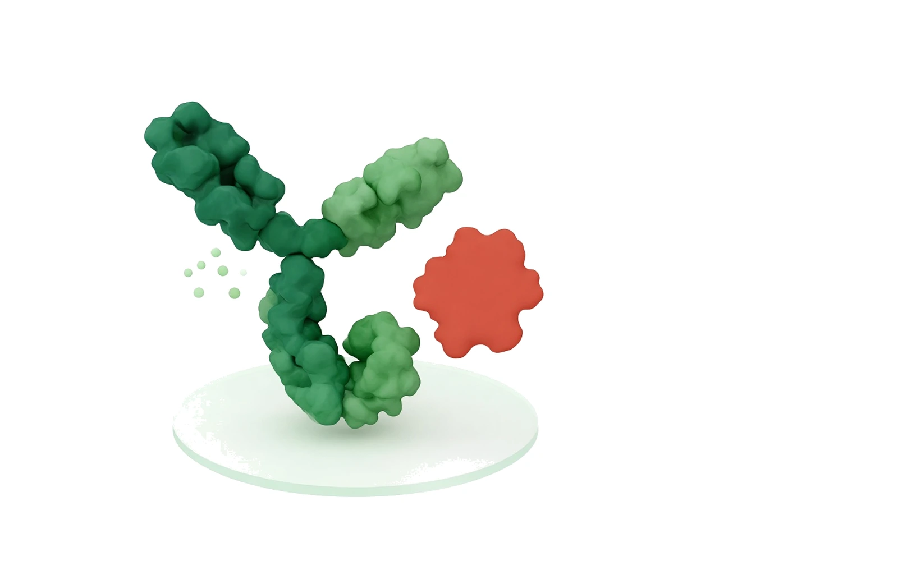
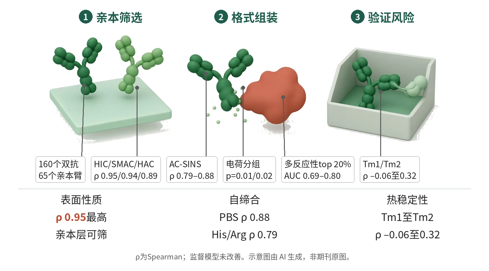

封面示意：绿色双特异抗体，一侧为赤陶红风险标记云。图片由 AI 生成，非原文图片。
在未经同行评审的160个双抗库研究中，Ritter等用亲本组合预测实测值，HIC/SMAC/HAC的Spearman ρ达0.95、0.94和0.89。

- 亲本标准IgG1重格式化
- 双抗KiH/CrossMab组装
- 按亲本算子预测双抗读出
- 分层识别继承与风险
- 热稳定性回到双抗实测
示意图概括亲本开发性如何在双特异性格式中分层继承：表面性质多可由亲本预测，自缔合与电荷和缓冲液相关，HIC×HAC前沿距离提示多反应性风险，热稳定性需双抗层面验证。示意图由 AI 生成，依据原文结果绘制，非期刊原图，不代表分子比例
研究背景与待解问题
双特异性抗体把不同结合臂放进同一分子，可带来单抗难以完成的双靶点或桥接功能；但开发性并不会自动相加。即使亲本单抗具有有利的开发性概况，组合成双抗后仍可能出现自缔合、多反应性、聚集以及热稳定性受损，这些新生属性过去多来自个案描述。
这篇bioRxiv预印本（未经同行评审）的切口，是把“父本决定”与“格式新生”分开测量。Ritter等没有从个案解释某个失败分子，而是在同一生产、纯化和PROPHET-Ab测定体系下，比较亲本属性怎样转移到双特异性格式，并由此提炼可筛选的设计规则。
研究设计
Ritter等构建160个双特异性抗体和65个亲本臂，全部置于统一knobs-into-holes CrossMab IgG1支架，并在PROPHET-Ab上完成10项开发性测定。亲本抗体构建为标准IgG1。所有抗体经CHO瞬时表达、Protein A捕获和抛光纯化；21对双抗还制作了互换取向，用作支架方向性的对照。
这是非临床开发性数据集，不是为治疗效应组间比较设计效能。核心继承读出是实测双抗值与亲本组合预测值的Spearman ρ；作者对每项测定用mean、min、max三种简单算子，覆盖n=125–160，并把复杂监督模型作为能否超过简单基线的负控。
核心结果
表面性质最可预测
主要读出显示，Class I表面性质最像亲本。HIC、SMAC和HAC的亲本组合预测与实测双抗值Spearman ρ分别为0.95、0.94和0.89；其中HAC由亲本最大值预测更好，ρ 0.89对mean算子的0.67，提示强正电表面斑块可主导肝素结合读出，可作为早期筛选依据。
自缔合受缓冲液影响
Class II自缔合保留亲本信号但受环境影响。AC-SINS在PBS pH 7.4的ρ为0.88，在His/Arg pH 6.0降至0.79。按噪声包络划分的增强子和抑制子还与电荷指标相关：绝对电荷总和最能跟踪增强子，p=0.01；带符号几何均值最能跟踪抑制子，p=0.02。
取向与缓冲液对照
缓冲液转换给出关键控制：brazikumab/gantenerumab、abrilumab/landogrozumab、ligelizumab/romosozumab这3个例子在PBS pH 7.4为抑制子，到His/NaCl pH 6均转为强增强子。取向互换对照中，21对双抗的大多数非热稳定性读出ρ为0.78–0.95，而Tm1/Tm2相关较弱。
多反应性部分继承
多反应性介于可预测和新生之间。PR-BVP的ρ达到0.80，另两个多反应性测定仅为0.67和0.60。作者进一步把亲本HIC×HAC平面上的前沿距离用于识别最高20%多反应性，AUC为0.69–0.80；高HIC臂与高HAC伙伴组合时，表面负担可在双抗中叠加。因此HIC×HAC更像风险标记，而非确定命运。
热稳定性需实测
Class III热稳定性则不服从亲本继承。用minimum算子时，Tm1到Tm2的ρ仅为–0.06至0.32。复杂监督模型也没有带来预测增益：SMAC、HIC、HAC最佳ρ为0.94、0.94和0.87，低于或持平于简单基线0.95、0.94和0.89。这使三类分层分别指向亲本筛选、缓冲液复核和双抗实测，形成设计规则。
机制解读
原文实验证明：结果直接建立了一个分层框架：HIC、SMAC、HAC与亲本组合值高度相关，AC-SINS和多反应性保留中等相关但存在离群，Tm1/Tm2相关最低。取向互换实验把大多数非热稳定性读出的支架方向效应限制在较小范围，同时突出热稳定性受格式影响。
电荷分析直接支持自缔合离群与Fv电荷分布相关；增强子由绝对电荷总和区分，抑制子由带符号几何均值区分。缓冲液从PBS pH 7.4换到His/NaCl pH 6可使若干抑制子变为增强子，说明这种相关性依赖制剂环境。
作者推测：作者推测，同号Fv电荷会强化整体电荷单极并促进分子间接近，异号电荷则可能在分子内相互抵消而降低自缔合；热稳定性难预测可能来自CrossMab结构域互换、异源Fc界面和Fv近邻改变了展开转变。这些解释由相关和对照支持，但不是逐个分子层面的因果证明。
局限与不确定
- 外推性首先受抽样限制：160个双抗只是65个亲本可形成2,080种配对中的非随机8%样本，作者也说明结论适用于已采样子集；所有分子又都使用单一多工程化IgG1支架，不能直接外推到DVD-Ig、BiTE或通用轻链平台。
- 建模局限来自特征与配对图。原文说明，计算特征来自单抗亲本序列，没有尝试双抗异源二聚体的结构预测；格式效应分解也限于加性per-Fv项，因为当前配对图密度不足以识别成对上位效应。
- 方法上，除21对取向互换分子外，每个亲本配对只选择单一排列；所有亲本被重格式化为IgG1，消除了同种型混杂，也牺牲了原始同种型背景。当前配对图密度还不足以可靠识别成对上位效应。
临床/产业意义
若在原文测定体系内使用这些规则，双抗发现可先在亲本层筛查疏水性和电荷，避免两个高HIC且高HAC的mAb配对；自缔合需在配方缓冲液中复验，热稳定性则在双抗层面实测。
对计算流程而言，这项预印本提示简单亲本组合基线是必要参照，复杂监督模型未明显改善。作者提出级联思路：先把单抗序列转成臂层经验值，再结合格式感知特征预测双抗开发性，并提到FAITE、Lilly TuneLab和Ginkgo-Apheris等数据计划。